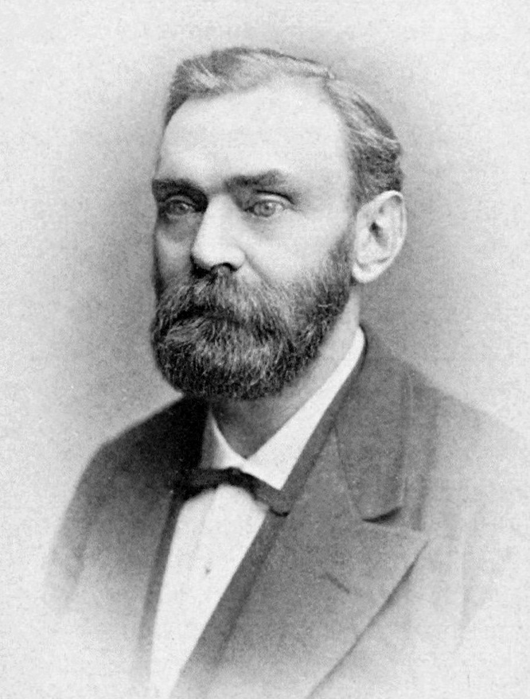

Se entregan los primeros premios Nobel: la fortuna de la dinamita premia a los benefactores de la humanidad
En el quinto aniversario de la muerte de Alfred Nobel, Estocolmo y Cristianía repartieron por primera vez los premios de su testamento: Röntgen por sus rayos X, Dunant por la Cruz Roja, entre otros laureados. El inventor de la dinamita pagará desde la tumba, año tras año, la cuenta de la ciencia y de la paz.

El quinto aniversario de la muerte de Alfred Nobel se celebró hoy como él lo dispuso: repartiendo su fortuna entre los benefactores de la humanidad. En la sala de la Academia de Música de esta capital, engalanada de flores pese al invierno, el príncipe heredero de Suecia entregó los primeros premios que llevan el nombre del inventor de la dinamita: al profesor Wilhelm Röntgen, el hombre de los rayos X, el de física; al holandés Van 't Hoff, el de química; al alemán Von Behring, vencedor de la difteria, el de medicina; y al poeta francés Sully Prudhomme, ausente por enfermedad, el de letras. En Cristianía, a la misma hora, Noruega otorgaba el de la paz.
El premio de la paz, que el testamento encomendó a Noruega, se dividió entre dos ancianos: Frédéric Passy, decano de los congresos pacifistas, y Henri Dunant, el ginebrino que tras la carnicería de Solferino fundó la Cruz Roja e inspiró el convenio de Ginebra. Dunant no viajó a recibirlo: vive retirado y pobre en el asilo de un pueblito suizo, de donde un periodista lo rescató del olvido hace pocos años, y donde según se afirma no piensa tocar el dinero del premio. El hombre que enseñó a las naciones a curar a sus heridos cobra su recompensa en la misma cama de hospicio donde el mundo lo daba por muerto.
La historia del premio empieza con un testamento que escandalizó a una familia y a un país. Nobel, químico solitario que amasó una de las grandes fortunas de Europa con la dinamita y trescientas patentes más, firmó en París, un año antes de morir, cuatro páginas que legaban casi todo su capital —más de treinta millones de coronas— a un fondo cuyas rentas premiarían cada año a quienes hubieran prestado los mayores servicios a la humanidad en física, química, medicina, letras y paz, sin distinción de nacionalidad. Los parientes pleitearon, los diarios suecos hablaron de despilfarro antipatriótico, y fueron necesarios cinco años de abogados para que la voluntad del muerto se cumpliera.
¿Por qué un fabricante de explosivos deja su fortuna a la paz? Cuentan que en 1888, por una confusión con la muerte de su hermano Ludvig, un diario francés publicó el obituario de Alfred con un título feroz: «El mercader de la muerte ha muerto». Nobel habría leído así, en vida, lo que el mundo pensaba de él, y no lo olvidó. Sus cartas con la baronesa Bertha von Suttner, apóstol del desarme, muestran a un hombre dividido: soñaba con que sus explosivos hicieran la guerra imposible de tan terrible. El profesor Röntgen, por su parte, sigue fiel a su estilo: no patentó sus rayos, no pronunció discurso, y regresa a Múnich con la modestia de siempre.
Cada premio ronda las ciento cincuenta mil coronas, más de lo que un sabio gana en veinte años de cátedra, y ya se discute en los cafés de Europa quiénes seguirán en la lista: no falta quien anote a los esposos Curie, cuyo radio este diario presentó hace tres años. Pero la cifra es lo de menos. Lo que se fundó hoy en Estocolmo es un tribunal nuevo, sin ejércitos ni fronteras, ante el cual las naciones competirán en descubrimientos y no en cañones. El remordimiento de un hombre se ha convertido en herencia de todos; habrá que ver si el siglo que empieza se muestra digno del legado, o si prefiere la otra mercancía del fundador.